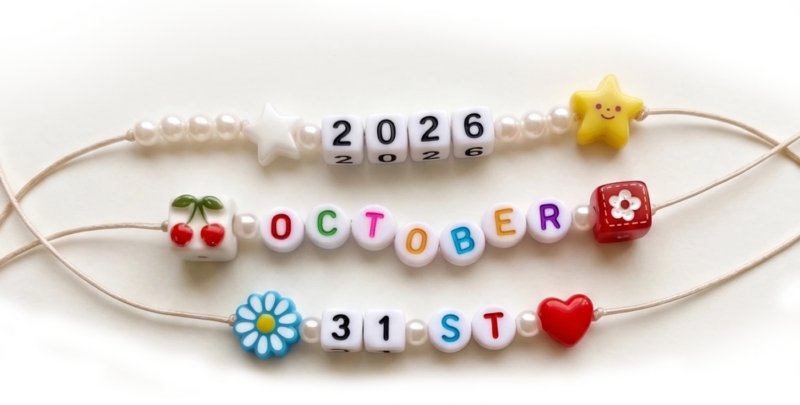

0
Days
0
Hours
0
Min
0
Sec
Invitation
소중한 분들을 초대합니다
Gallery
Film
With Gratitude
마음 전하실 곳
참석이 어려우신 분들을 위해
계좌번호를 안내드립니다.
넓은 마음으로 양해 부탁드립니다.
Sticker Board
스티커꾸미기를 해주세요
아래에서 스티커를 고른 뒤
보드 아무 곳이나 톡 눌러주세요
보드 아무 곳이나 톡 눌러주세요
아직 남겨진 쪽지가 없습니다.
첫 번째 쪽지를 붙여주세요.
첫 번째 쪽지를 붙여주세요.